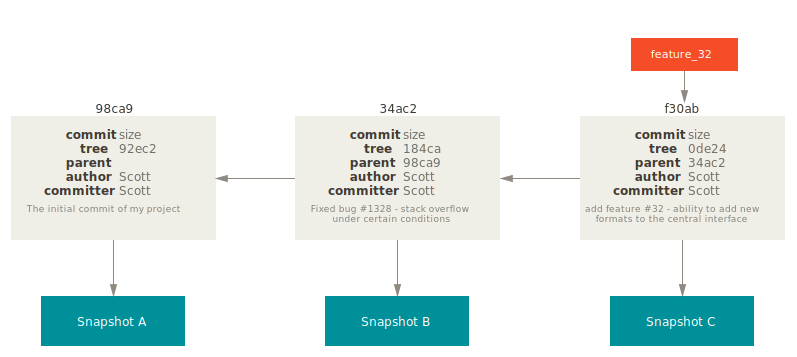

Session One
Understanding Git
Git is a distributed version control system for tracking changes in computer files and coordinating work on those files among multiple people
From Wikipedia, the free encyclopedia
Git is a distributed version control system for tracking changes in computer files and coordinating work on those files among multiple people
From Wikipedia, the free encyclopedia
Git is a distributed version control system for tracking changes in computer files and coordinating work on those files among multiple people
From Wikipedia, the free encyclopedia
What does distributed (DVCS) means?
But there are others...
What makes it so special?
Some people refer to Git’s branching model as its “killer feature”, and it certainly sets Git apart in the VCS community.
From Git Pro, by Scott Chacon (@chacon) and Ben Straub (@benstraub)
Git Branching Model
Introducing Git directed acyclic graph
Each node in the graph is a commit
Commits have a unique identifier and contain a pointer to the snapshot made at the moment the commit was done.
Each commit has a parent commit (exept the first commit)
Two (or more) commits can have the same parent
And that's what we usually know as a branch
But that IS NOT a branch
A branch is just a reference (pointer) to a certain commit
We can have as many branches as we want
But branches are not the only kind of references that Git can manage
The HEAD reference (always uppercase) is a special reference which is always pointing to the branch you're currently on.
Another kind of references are tags
Tag it’s like a branch reference, but it never moves. It also contains a tagger, a date, a message, and a pointer.
So when we make commits, branches, tags... We are building a graph
Building the Git graph
In Git a file can have two states
-
Tracked files are files that were in the last snapshot; they can be unmodified, modified, or staged.Tracked -
Untracked files are everything else any files in your working directory that were not in your last snapshot and are not in your staging area.Untracked
File lifecycle
When you make a commit git grabs all the staged changes and creates a snapshot with them
Then it creates a new commit object with all the information and ties it to the snapshot
Finally it resets the branch you're currently on, to make it point to the new created commit object
Working with remotes
First time we clone a Git repo we'll have the same graph than in the remote
Note that remote references are prefixed (i.e. "origin/master")
From that moment remote and local branches will go forward separately

Separately means different commit hash generation
At the moment we fetch the new data from the remote we'll get the new commits on remote
But our local (not prefixed) reference and commits will remain intact
This can be conceived as working with different branches
And because we can have as many branches as we want
We can have as many remotes as we want too
Understanding that, we can assume that the same branch can be completely different in the remote and in our local machine
So what if we want to update the remote with the new commits we made?
Given that situation to push our changes will fail
A way to avoid this fail is to force the push to the server (not the recommended way üòÖ)
This way we'll loose the changes of the commit 31b8e cause it will become orphan
Orphan references are erased periodically by the garbage collector
Big picture
The end
Next Sessions:
-
We'll learn how to keep the history clean, and how to avoid problems.Git best practices -
Some problems are unavoidable... Let's see how can we solve them.Troubleshooting